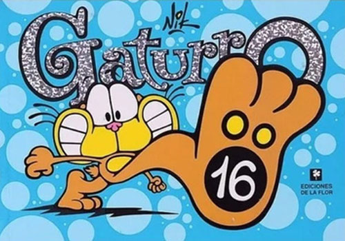
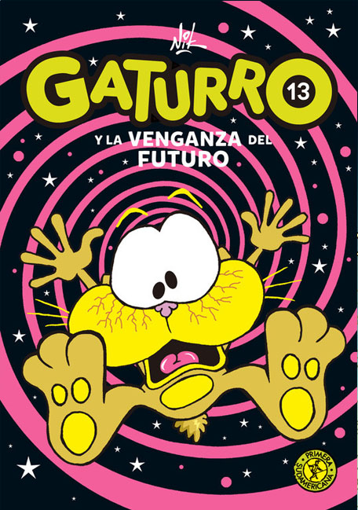

La bibliografía de Gaturro se compone de:
Principales comics de la Coleccion Gaturro:
Gaturro 1 |
Gaturro 3 |
Gaturro 16 |
Gaturro 31 |
|  |
Principales comics de Gaturro Aventuras.
Gaturro y la maldición de Tutangatón |
Gaturro y la venganza del futuro |
|  |
Principales comics de Gaturro a lo Grande:
Gaturro a lo Grande 3 |
Gaturro a lo Grande 6 |
La serie animada de Gaturro fue producida para Latinoamérica y realizada por Hook Up Animation y producida por QB9 Entertainment. Se realizó en mayo de 2013 y se emitió por primera vez el 28 de marzo de 2014. Fue adquirida por Cartoon Network en febrero del 2014. Anteriormente. Posteriormente, pasó a emitirse en El Trece y próximamente en Pakapaka.
Gaturro: la película es una película animada Argentina en 3D, basada en el personaje de Nik y dirigida por Gustavo Cova.Se estrenó el 9 de septiembre de 2010 en Argentina. Fue la tercera película argentina más taquillera de ese año y se proyectó en toda Latinoamérica y España.La película fue bien recibida en su país de origen, teniendo como calificación un 62 de 100 en el sitio web "Todas Las Críticas"2 y obteniendo un total de 2,1 millones de Dólares localmente. Su recaudación mundial casi supera los 3 millones.
Contactos
Mundo Gaturro
Galería
Transportes
Lista de Libros
Personajes
NIK